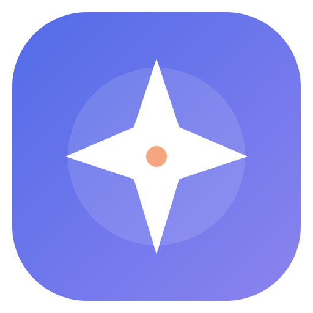

◫
Tabs that keep their place
Pin, reorder, mute, suspend, and restore tabs. Pick up where you left off on your next launch.

northstarMeet a desktop browser built for the way you move around the web: lots of tabs, a little more focus, and profiles that stay yours.
Northstar 0.2.0 · Built with Electron + Chromium · Local profiles, no cloud sign-in
Familiar browser essentials, with thoughtful controls close at hand.
Pin, reorder, mute, suspend, and restore tabs. Pick up where you left off on your next launch.
Keep preferences, favorites, history, and site data in separate local profiles. No server account required.
Review camera, microphone, location, and other sensitive requests. Keep private tabs in a separate session.
Northstar is an independent desktop browser built on Chromium and Blink. Profiles are stored on your device, so browsing data stays separated locally.
Northstar is an early release for Linux. Browse the code, see what’s included, and help shape what comes next.
View downloads on GitHubVersion 0.2.0 · Linux x64 · More platform builds are in progress.